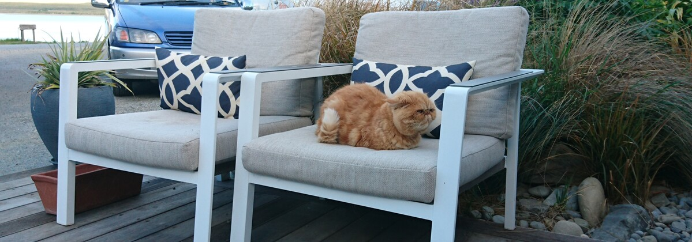

常見問答
-
Q: 沒有經驗可以體驗嗎?
當然可以，Yoga Feline具有豐富多元的課程，除了課程有分基礎和進階班以外，老師也會根據同學狀況進行調整。
-
Q: 為什麼採取小班制?
小班制能給予每一位貓咪足夠舒適的空間，老師更能記住每位貓咪的狀況安排適合的練習。
-
Q: 請問如何收費?
A: 我們有多樣化及彈性的方案及豐富的課程可供您選擇，歡迎您於營業時間入館了解或來電，我們將竭誠為您服務。
-
Q: 請問魚老師台中區域貓咪到府照顧服務是什麼?
了解貓咪行為，給貓咪舒適的互動，在飼主出遠門的時候代為伺候貓咪。糖尿病、腎臟病等慢性病貓咪也可照顧，提供服務前會先親臨現場與飼主了解貓咪狀況以及照顧方式。（架設網頁是練習，服務是真的有哦～）
- 地址：408台中市南屯區益豐路三段399號
- 電話：04-123456
- mail：vacanteress@gmail.com